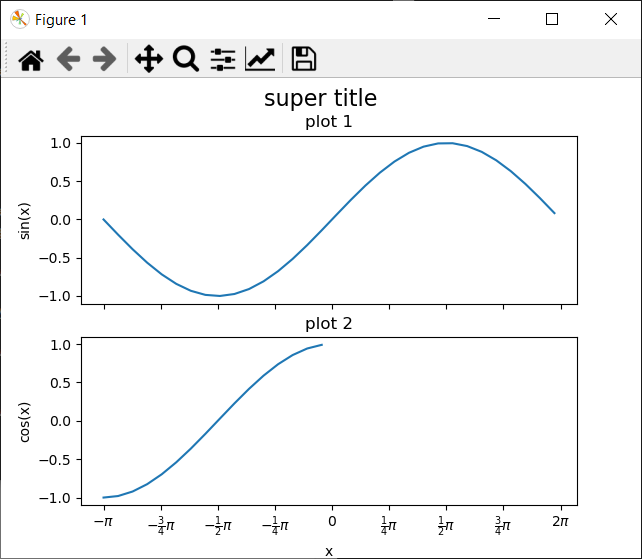
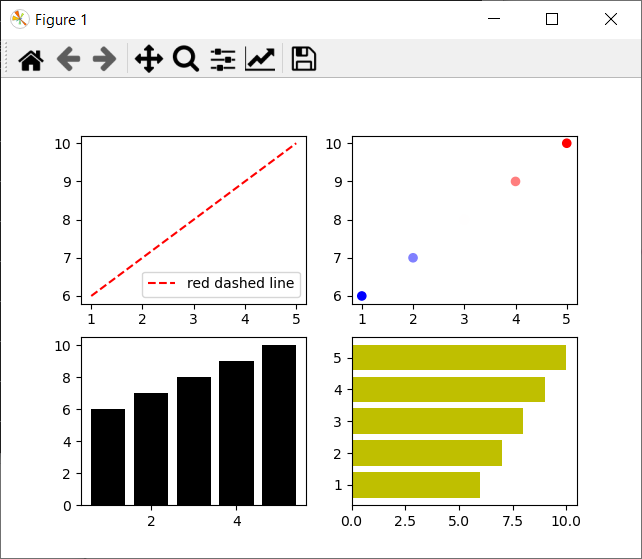

WUR Geoscripting

Week 3, Tutorial 8: Python refresher
Introduction
Good afternoon! Today we will start working with Python for geoscripting and do a refresher of functions in Python. If you are unfamiliar with Python and/or feel that you need more training, follow one of the Datacamp courses as introduction into Python before today:
- Introduction to Python | recommended to follow if you haven’t any scripting experience so far
- Python for R users | recommended if you have experience already in R
Today’s Learning objectives
Know how to work with virtual environments: Conda + Mamba
Know how to run a Python script from the terminal
Get introduced to Python editors and IDEs
Refresh Python programming knowledge
Know how to work with virtual environments: Conda + Mamba
Get introduced to Python editors and IDEs
Familiarize yourself with python Objects and inheritance
Be able to visualize data using python and matplotlib
Introduction to Python
Python is a jack-of-all-trades programming language that is free, flexible, open-source, cross-platform and has a very large community behind it. If you ask Python programmers what they like most about Python, they will often cite its high readability and high availability of good packages. There are many Python packages out there for geoscripting, data wrangling, visualization and machine learning. For example:
- Geoscripting
- GeoPandas (Vector Processing)
- Rasterio (Raster Processing)
- GDAL/OGR (Vector and Raster Processing)
- QGIS plugins (Open Source GIS)
- ArcPy (Propietary GIS)
- Data Handling
- Pandas (Dataframes and Data Analysis)
- NumPy (Scientific Computing)
- Visualization
- Matplotlib (General Graphics)
- Seaborn (Statistical Graphics)
- Folium (Interactive Maps)
- Machine Learning
- scikit-learn (Machine Learning)
- Keras + TensorFlow (Deep Learning)
- PyTorch (Deep Learning)
Python package management with Conda
A set of tools co-exist for installing and managing Python packages. It is possible to install packages on your base Python interpreter, but sooner or later you will get conflicting Python packages since packages have varying dependencies. It can even break your system Python interpreter.
Instead, we recommend to use a Python package manager that can make use of virtual environments, such as Conda or Mamba. That way, you can create a conda environment on your machine for each project. In conda environments, basically anything, such as software, C libraries or R packages can be installed. Here we use them here for installing Python packages. Packages installed in one environment do not interfere with your base Python or with other conda environments. Additionally, it is possible to export and share the requirements for your (open source) project with colaborators or users of your code.
Mamba installation
For this course, we will make use of Mamba, a fast drop-in
reimplementation of the Conda package manager. It has its core
parts implemented in C++ for maximum efficiency, makes use of parallel
downloading of repository data and package files using multi-threading,
and uses libsolv for (much) faster dependency solving. To
install Mamba in your Linux environment, we have prepared a
short Bash script for you. Just run the following lines of
code, line by line, in a new terminal window.
git clone https://github.com/GeoScripting-WUR/InstallLinuxScript.git
cd InstallLinuxScript/user
chmod u+x ./install.sh
./install.shThis will install Mamba into ~/mamba. Finally,
restart your terminal to be able to use Mamba and
Conda in the terminal. Next, let’s see how to use
Mamba in case you want make new virtual environments by
yourself, or install packages after creating the environment.
Mamba usage
Mamba creates isolated conda environments with sets of packages, that do not interfere with your base Python or with other conda environments. To create an environment:
mamba create --name geotest python numpyThis would create a new environment called geotest with
Python, NumPy and Spyder installed into the
conda environment. Another option is to create an environment from a
.yaml file, in which all required modules are listed. You
will see an example of this later on in this tutorial. To create an
environment from such a file, you can use the argument
--file (or --f in short).
Let’s first list the currently available environments:
mamba info --envsMamba puts an asterisk (*) in front of the active environment. Now we activate the environment. While Mamba replaces Conda for most commands, this is not the case for (de)activating environments:
# Cross-platform (but not always working, like in our VM, so we use the next option)
conda activate geotest
# Linux, macOS
source activate geotest
# Windows
activate geotestAfter this, the current environment is shown in parentheses in front
of your prompt ((geotest)$). Note that the activated
environment is only valid for the shell in which you activated it. For
instance, if you close the shell window and open a new one you will have
to activate it again.
After creating a conda environment, (additional) Python packages can be installed. There are three possible ways to install packages, which we list below.
- Using Mamba to install and manage conda packages. This downloads conda packages using conda channels, which are URLs to directories containing the conda packages. Generally, installing conda packages using Mamba is the preferred method.
- Using pip to install packages and Mamba to manage
these packages. pip is available for Windows, macOS and Linux.
pip can also install binary wheels on
Windows. You should generally not install packages from pip
in a conda environment unless it’s the last resort. This is because
after you use pip to modify an environment, you can no longer
use
conda/mambato do so (trying that will break your environment, because pip does not communicate its changes to Conda). Hence install packages withmambathat you can first, and only then usepip, and then never touch the environment withmambaagain (delete and start fresh if you need to). - Using the distribution’s package manager (only on Ubuntu, that is
sudo apt-get install python-*).
The mamba search command searches a set of channels. By
default, packages are automatically downloaded and updated from the
default channel. To search for a package, type:
mamba search pandasThis gives a list of all packages that have “pandas” in the name and lists all available versions. To install:
mamba install pandasThis installs the latest compatible version of Pandas. Note that this would install it into your currently activated environment.
Note that you can also install multiple packages at the same time:
mamba install geopandas matplotlibAs you saw with Spyder (which is an IDE, more on that later), Mamba is also able to install some non-Python packages that have Python bindings. This is useful for making sure your Python and binary versions match and do not interfere with the system-wide ones.
Some additional helpful utilities for package management in this context are:
mamba listto check which packages are installed inrootor in the active environment;python --versionorgdal-config --versionto check which Python or GDAL version is used in the environment;which spyderortype spyderto find out which Spyder executable is used either from system or conda environment.
Removing packages is just as simple:
mamba remove geopandas pandas foliumNow, we deactivate the environment and return to base environment.
# Cross-platform
conda deactivate
# Linux, macOS
source deactivate
# Windows
deactivateWhen we are finished, and do not need the environment for next time,
we can remove the environment geotest.
mamba remove --name geotest --allRunning a Python script in the terminal
Within a conda environment, Python can be started directly, or can be called to run a script file. To start Python directly:
pythonNow, you can type Python expressions that will be executed one by one:
import sys
print('Good morning, you are running Python:', sys.version)exit()
# or
quit()Usually, we do not want to run expressions one by one, but build
scripts instead, to ensure transferability and reproducibilty. Create a
new text file and (re)name it (to) test.py. Open it, for
example with a text editor, paste in the code you used above
(import sys etc.), and save the script. Navigate in the
terminal to the location where this script is stored, using
cd. Finally, run the script with:
python test.pyThe output is printed to the terminal. Running a script from the terminal is less error-prone than running it from an IDE (see the next section), such as Spyder, as IDEs often keep variables in memory after the script has finished running. Therefore, running a script from the terminal is a good final test before submitting an exercise or assignment.
Python editors and IDEs
There are many Integrated Development Environments [IDE] for Python, and every programmer has their own preference. An IDE is a software application that provides facilities for software development.
- Jupyter Notebook integrates visualization with code and is suitable to make tutorials, simple dashboards, quick visualizations, and do prototype testing. Jupyter Notebooks run in your browser on a localhost server or on a web server. They allow for various programming languages, e.g. Python, R, Julia, Spark or PySpark.
- Spyder is a lightweight IDE. In this course, Spyder is the recommended Python IDE.
- PyCharm Community Edition is a free professional Python IDE with a lot of advanced functionality, such as integrated GIT version control, code completion, code checking, debugging and navigation. This IDE can optionally be used by more advanced scripters during this course instead of Spyder, but do know that you will not be assisted for solving IDE-related issues.
Jupyter Notebooks
Jupyter Notebooks integrate code and visualization, and are therefore
helpful for demonstration purposes. Install jupyter and the
module folium in an existing or new environment that
includes Python and start Jupyter:
jupyter notebookJupyter should pop up in your browser. You will see a menu with all files in your working directory. The Jupyter Notebook will only see files that are accessible from the working directory in which you launched the notebook!
Make a new folder: New → Folder, rename the folder (check the box next to the new ‘Untitled Folder’ and click ‘Rename’ in the top) and, in this folder, create a new Python3 Jupyter Notebook New → Python 3. Give your notebook a name by clicking on untitled. Note that this creates a file with the extension .ipynb, which stands for Jupyter Notebook.
Feel free to have a go at the user interface tour (Help → User Interface Tour), or hover over the toolbar to check out the tools. The main tools are:
- Save and checkpoint
- Insert cell below
- Run
- Code/Markdown/Heading (List box)
Similar to RMarkdown, Jupyter Notebooks have code cells (Code) and text cells (Markdown). Insert two extra cells by clicking the + button and change the first cell from code to markdown. Enter some documentation for your code (e.g. your team name, exercise and date). Leave the other cell on code.
Type the following Python code in the code cell:
import folium
m = folium.Map(location=[51.9700000, 5.6666700], zoom_start=13)
mRun the code cell by selecting it and pressing the Run button, or press CTRL + Enter or Shift + Enter. You’ll see a map visualized below your code, similar to the one below. Try to drag the map to play around with it.

Your Jupyter Notebook is automatically saved as an
.ipynb file on your computer (the file extension comes from
the historic name “IPython Notebook”). The notebook can be downloaded as
a Python script, pdf or html. You can also save it manually.
To exit a notebook properly, use File → Close and
Halt. After that, by pressing Ctrl + c in the terminal where
Jupyter Notebook server is running, you cancel the running process. The
terminal goes back to command line and you can exit the virtual
environment by typing conda deactivate.
conda deactivateSpyder
The Spyder IDE can be started in a terminal when the Spyder package is installed in the active conda environment. So, using Mamba, make an environment and install Spyder to that environment. Activate the environment. Spyder will automatically make use of the Python interpreter of the active conda environment. To start Spyder:
spyderIn Spyder you should see an editor, a file explorer and a console. Have a look at the toolbar. Some important shortcuts are:
- F5 to run your script
- CTRL + S to save your script
- CTRL + 1 to comment/uncomment your code
- TAB to indent your code
- SHIFT + TAB to unindent your code
Open a new file and save it somewhere as main.py (File –
> New File –> Save As). Test writing a few lines of code and
running the script.
Python refresher
Setting up the environment
In the second part of this tutorial we will refresh your python knowledge and build upon it. Again, we advise you to code in Spyder, as this IDE is the recommended IDE for the python part of this course.
First, make a directory structure for this tutorial:
cd ~/Documents/
mkdir PythonRefresher #or give the directory a name to your liking
cd ./PythonRefresher
mkdir outputWe only make a directory for output, because no input data or
separate scripts are created in this tutorial. Next, we will create a
conda environment from a file. First create a text file in your
preferred text editor, e.g. gedit. Then, (re)name it (to)
refresher.yaml, and copy the following content into the
file:
name: refresher
dependencies:
- python
- numpy
- matplotlib
- geopandas
- spyderNow, create a new conda environment based on this file:
mamba env create --file refresher.yamlOnce everything is installed, activate the environment and start Spyder:
source activate refresher
spyderCreate a new Python script and save it.
Important to note: for compatibility, it is best to install packages
from the same channel as much as possible. Given that packages in the
file refresher.yaml are installed from the
conda-forge channel, it is wise to use this same channel
when you want to install additional packages in your environment.
Quick refresher
In the tutorial about R and Python we have gone over the differences and similarities of python and R. This tutorial also contains some basic python syntax, in this tutorial we assume you know this content, but we will go over a few basics here as well. The example below are mostly meant for reference purposes, we assume you understand most of this refresher already.
Printing and basic data types
In python we assign variable using the equals sign
(=):
Printing in python is done using the print function. We
can print variables directly:
# Integer
age = 25
# Float
height = 1.75
# String
name = "John Doe"
# Boolean
is_student = True
# Print a name
print(name)We can use string formatting to use flexible strings, for example for
printing. to start a formatted string, we put a f before
the string. We can use curly brackets {} in this formatted
string. The text between these curly brackets is executed as regular
python code.
# String formatting and printing
print(f'{name} is {age} years old and is {height} meters tall.)Basic arithmetic operations:
a = 10
b = 5
addition = a + b
subtraction = a - b
multiplication = a * b
division = a / b
modulo = a % b
exponentiation = a ** b
print(addition, subtraction, multiplication, division, modulo, exponentiation)Conditional statements
x = 15
if x > 10:
print("x is greater than 10")
elif x == 10:
print("x is equal to 10")
else:
print("x is less than 10")Loops (for and while)
# For loop
for i in range(5):
print(i)
# While loop
count = 0
while count < 5:
print(count)
count += 1Lists and basic list operations
# Creating a list
fruits = ["apple", "banana", "orange"]
# Accessing elements
print(fruits[0]) # Output: "apple"
# Adding elements
fruits.append("grape")
# Removing elements
fruits.remove("banana")
# Length of the list
print(len(fruits)) # Output: 3Functions
# Function to add two numbers and return the result
def add_numbers(a, b):
return a + b
result = add_numbers(5, 3)
print(result) # Output: 8Dictionaries
# Creating a dictionary
person = {
"name": "Alice",
"age": 30,
"is_student": False
}
# Accessing values
print(person["name"]) # Output: "Alice"
# Adding a new key-value pair
person["occupation"] = "Engineer"
# Removing a key-value pair
del person["is_student"]Importing packages
Python is used by a very large community, as is said before. One of
the reasons for this is that this entire community builds a lot of (open
source) packages. It is therefor very useful to be able to build upon
these packages. In R you have worked a with dataframes and
spatial dataframes. In Python these are not standard datatypes,
but they are implemented in very well known packages called
Pandas and its spatial counterpart GeoPandas.
We will go in much more detail during the Python-Vector tutorial but we
will introduce them quickly here.
In python we import a package using the import statement
(instead of th the library function in R) . For example
importing the pandas package goes as follows
import pandas as pdAs you can see we can import a package as something. We use
this if we want to point at specific functionality of this package. If
we want to point at for example the read_csv function from
pandas we we call pd.read_csv. This function is also
implemented in other packages, but now we are sure we use the pandas
version of this function. Importing pandas is a convention, used very
widely in the python community.
dataframe as follows:
data = {
'Name': ['Alice', 'Bob', 'Charlie'],
'Age': [25, 30, 22],
'City': ['New York', 'San Francisco', 'Chicago']
}
df = pd.DataFrame(data)
print(df)We can access some information from this dataframe as
follows:
# Display the first few rows of the DataFrame
print(df.head())
# Get statistical information about the DataFrame
print(df.describe())
# Access a specific column
print(df['Age'])GeoDataFrame
The spatial counterpart of adataframe is a ‘GeoDataFrame’,
which we normally import as gpd:
import geopandas as gpd
# Dummy data for the GeoDataFrame
data = {
'Name': ['Location A', 'Location B', 'Location C'],
'Latitude': [40.7128, 34.0522, 41.8781],
'Longitude': [-74.0060, -118.2437, -87.6298]
}
# Create the GeoDataFrame with a single line of code
gdf = gpd.GeoDataFrame(data, geometry=gpd.points_from_xy(data['Longitude'], data['Latitude']))
# Display the GeoDataFrame
print(gdf)Object-Oriented Programming in Python
We have now gone over most of the more basic basic functionality of Python, a lot of similar things you have used in R. A concept we have not used before is the concept of objects. They have shortly been introduced in R, but we will elaborate on them in Python. Up until now, in this course we have looked at R mainly as a scripting language, we call this way of programming Procedural Programming. Both Python and R can be used in another programming paradigm: Object Oriented Programming. Object Oriented Programming (OOP) is a way of programming where functionality and information is encapsulated in objects. Instead of assigning variables and functions, objects are used where both values (properties) and calculations (methods) can be stored together. This offers several advantages. OOP promotes modularity and re-usability by breaking down complex problems into smaller, manageable units, these are the objects. These objects can be reused in various parts of the program or even in other projects, leading to more efficient, scalable and organized programming. Especially when working on projects containing lots of code OOP will make your work a lot easier to understand for you and others and it is easier to re-use parts of the code.
How to work with objects in Python
In Python, objects are created and manipulated using classes. A class
serves as a blueprint that defines the structure and behavior of
objects. It brings together data (properties) and functions (methods)
into a single object. To define a class in Python, we use the
class keyword, followed by the name of the class. Let’s
take a look at an example of a simple class called
Person:
class Person:
def __init__(self, name, age):
self.name = name # < this is a property
self.age = age # < this is also a property
def greet(self): # < This "function" is a method
print(f"Hello, my name is {self.name} and I'm {self.age} years old.")In the provided code, the __init__ method is a special
method known as a constructor. It is automatically called when
an object is created from the class. The self parameter
refers to the instance of the class itself, allowing access to its
properties and methods. Whenever a method is defined within a
class, we give self as the first
parameter.
The Person class has two properties, name
and age, as well as one method, greet. The
greet method prints a greeting message that includes the
person’s name and age.
To create an instance of the Person class, you simply
call the class as if it were a function and assign the result to a
variable:
person1 = Person("Alice", 25)
person2 = Person("Bob", 30)We have created two objects, person1 and
person2, which are instances of the Person
class. Now we can access the properties and call the methods of these
objects:
print(person1.name) # Output: Alice
print(person2.age) # Output: 30
person1.greet() # Output: Hello, my name is Alice and I'm 25 years old.
person2.greet() # Output: Hello, my name is Bob and I'm 30 years old.This example is straightforward, but keep in mind that classes can become more complex.
Question 1: Take a look at the creation of a GeoPandas
GeoSerieshere. It may seem complicated and hard to read, but it is well-documented, so try to understand some of its functionality. Theto_jsonmethod, for example, provides straightforward functionality (though it may still be challenging to read due to its complexity).
You may have noticed that class definitions differ from what we have
learned. In the GeoPandas example, the class is defined as
follows:
class GeoSeries(GeoPandasBase, Series):However, we previously learned to define a class like this:
class GeoSeries:The difference lies in the code within the parentheses, which
represents inheritance. The class will inherit all the
functionality from the classes specified as arguments, in this case,
GeoPandasBase and Series. The
Series object refers to the Pandas.Series,
which contains thousands of lines of code with various functionality.
Therefore, the GeoPandas GeoSeries contains all the
functionality implemented in Pandas, as well as those from
GeoPandasBase and GeoPandas.Seriesitself. When
new functionality is developed for the Pandas package, this
is directly available in the GeoPandas objects, since we
inherit all functionality from pandas.
Phew, that’s a lot of complicated code, and it may seem overwhelming. You don’t need to understand every detail. The important thing is to grasp the value of classes, objects, and inheritance. When creating a class, we can inherit functionality from another class. How does this work in a simple example?
So, we’ve learned that with inheritance, classes can acquire all the
functionality from other classes and build upon that. Let’s create a new
object called Student, which will inherit all the
properties and methods from the Person class we defined
earlier.
class Student(Person):
def __init__(self, name, age, student_id):
super().__init__(name, age)
self.student_id = student_id
self.is_studying = False
def study(self):
self.is_studying = True
print(f"{self.name} is studying.")In the provided code, the Student class inherits from
the Person class, which we will refer to as the superclass.
By doing so, it extends the functionality of the superclass by adding a
new property (student_id) and a new method
(study). The super() function is used to call
the superclass’s __init__ method, allowing the subclass to
initialize the inherited properties.
As a result, the Student class contains both the methods
and properties inherited from the Person class, as well as
the additional ones defined within the Student class:
student = Student("Eve", 22, "123456")
print(student.name) # Output: Eve
print(student.student_id) # Output: 123456
student.greet() # Output: Hello, my name is Eve and I'm 22 years old.
student.study() # Output: Eve is studying.In this example, student is an instance of the
Student class. It can access the inherited properties from
the Person class, such as name, as well as the
newly added property student_id and
is_studying, which defaults to False.
Similarly, it can invoke both the inherited method greet
and the additional method study, which are specific to the
Student class. The method study prints a
message and sets the is_studying property to
True.
Question 2: Create a new class called
Teacher. This new class also inherits fromPerson. Define a method for the teacher that checks whether a student is studying. The student should be an input to the method.
Visualization
Visualization is essential to make concepts understandable and patterns recognizable. In Python, Matplotlib is a general plotting package. It is used as a base for many other, more tailored, packages. One of the core advantages of Matplotlib is that the representation of figure is separated from the act of rendering it. This enables building increasingly sophisticated features and logic into the figure, a bit like making a map in a GIS.
In Matplotlib, a figure object contains axes, or subplots. These axes contain an x-axis, a y-axis and can contain lines and text. This hierarchy is important to understand when you want to edit a plot:


Let’s create a simple line figure, based on data in
NumPy.arrays.
import numpy as np
from matplotlib import pyplot as plt
# Create some data
x = np.arange(-np.pi, np.pi, 0.2)
y = np.sin(x)
# Plot x against y
plt.plot(x, y)
# Show the plot
plt.show()
Note that the behavior of plt.show() depends on how you
run the script. If you are using Spyder and want plt.show()
to work:
- Go to Tools.
- Go to Preferences.
- Select IPython console.
- Go to Graphics tab.
- In the Graphics backend section, select Automatic as the backend type.
- Restart your kernel.
Instead of a single plot, the figure can have subplots (here two).
Using the sharex and/or sharey argument, the
axes can be aligned automatically, for easy comparison between the
subplots. Also, we can add a title and axis labels. Finally, we can
change the positions of the tick marks on an axis to something
meaningful in the context of trigonometric functions and customize the
labels with regular text or lateX. Check if you understand what object
in the hierarchy is edited and why.
import numpy as np
from matplotlib import pyplot as plt
# Create some data
x1 = np.arange(-np.pi, np.pi, 0.2)
y1 = np.sin(x1)
x2 = np.arange(-np.pi, 0, 0.2)
y2 = np.cos(x2)
# Initiate a figure with two subplots
f, axarr = plt.subplots(2, sharex=True)
# Subplots are stored in an array
line = axarr[0].plot(x1, y1)
axarr[0].set_title('plot 1')
axarr[1].plot(x2, y2)
axarr[1].set_title('plot 2')
f.suptitle('super title', fontsize=16)
# Axis label
axarr[1].set_xlabel('x')
axarr[0].set_ylabel('sin(x)')
axarr[1].set_ylabel('cos(x)')
# Axis ticks and tick labels
xticks = axarr[1].get_xticks()
print(xticks)
new_ticks = np.arange(-np.pi, np.pi + 0.1, 0.25 * np.pi)
new_labels = [r"$-\pi$", r"$-\frac{3}{4}\pi$",
r"$-\frac{1}{2}\pi$", r"$-\frac{1}{4}\pi$",
"$0$", r"$\frac{1}{4}\pi$",
r"$\frac{1}{2}\pi$", r"$\frac{3}{4}\pi$",
r"$2\pi$"]
axarr[1].set_xticks(new_ticks)
axarr[1].set_xticklabels(new_labels)
plt.show()
One can also create multiple subplots (axes) and use different plotting styles, changing e.g. the marker style, line style, marker size, and colors. Furthermore, for the upper left subplot it is demonstrated how to add a legend; adding a label to the plotted line is essential for this.
from matplotlib import pyplot as plt
x = [1, 2, 3, 4, 5]
y = [6, 7, 8, 9, 10]
# New: define number of rows and columns of subplots and unpack them directly
# into variables that then each contain one axes object
f, ((ax0, ax1), (ax2, ax3)) = plt.subplots(2, 2)
# Dashed line, label for legend, and show the legend on the subplot
ax0.plot(x, y, 'r--', label='red dashed line')
ax0.legend(loc='lower right')
# Scatter plot, using a colormap based on the y-value, changing the marker size to 35
ax1.scatter(x, y, c=y, cmap='bwr', s=35)
# Bar chart, changing the bar color to black
ax2.bar(x, y, color='k')
# Horizontal bar chart, changing the bar color to yellow
ax3.barh(x, y, color='y')
plt.show()
Question 3: In the upper right subplot, why is there no point at x=3, y=8?.
When working with spatial data, it is crucial that the spatial scale
(aspect) in the x and y direction is the same. Because Matplotlib can be
used for plotting any kind of data, not necessarily spatial, it does not
automatically do this. We can use plt.axis('equal'), or
ax.set_aspect('equal') on the axis, to ensure equal scales
in both directions. Let’s test this on the non-spatial data in the plots
above, see what happens (make sure to adjust the code above properly,
and replace plt.show() with the code below). Adjust the
Spyder working directory by clicking on the directory icon in the top
right pane if necessary.
ax0.set_aspect('equal')
ax1.set_aspect('equal')
ax2.set_aspect('equal')
ax3.set_aspect('equal')
plt.savefig('output/equal_scale.png')
Python help
There are several ways to find help with programming in Python. Searching the internet typically solves your problem the quickest, because it finds answers on multiple platforms, such as StackOverflow and Github. During Geoscripting we have the forum to ask and give help. Asking your friends or colleagues in person is also a great way to learn and fix programming problems. Another good option is get documentation from the package website or inside Python:
import sys
help(sys)See how the objects and functions in the sys package got
listed.
Question 4: What kind of functionality does the
syspackage provide?
What have we learned?
- Python package management with Mamba & Conda
- Running a Python script in the terminal
- Using Python editors and IDEs
- What Object Oriented Programming is
- Using modules and packages
- Visualization
- Python help